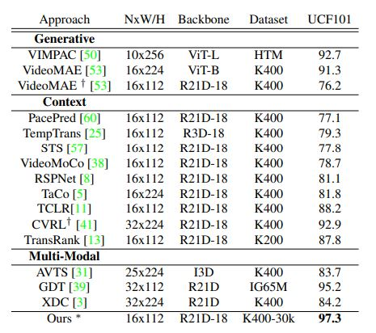

Self-supervised learning is an effective way for labelfree model pre-training, especially in the video domain
where labeling is expensive. Existing self-supervised works
in the video domain use varying experimental setups to
demonstrate their effectiveness and comparison across approaches becomes challenging with no standard benchmark. In this work, we first provide a benchmark that
enables a comparison of existing approaches on the same
ground. Next, we study five different aspects of selfsupervised learning important for videos; 1) dataset size,
2) complexity, 3) data distribution, 4) data noise, and, 5)
feature analysis. To facilitate this study, we focus on seven
different methods along with seven different network architectures and perform an extensive set of experiments on 5
different datasets with an evaluation of two different downstream tasks. We present several interesting insights from
this study which span across different properties of pretraining and target datasets, pretext-tasks, and model architectures among others. We further put some of these insights to
the real test and propose an approach that requires a limited amount of training data and outperforms existing stateof-the-art approaches which use 10x pretraining data. We
believe this work will pave the way for researchers to a better understanding of self-supervised pretext tasks in video
representation learning.
Overview of proposed benchmark. We study five different aspects in this benchmark study. Starting from left,
1) we show the analysis of effect of dataset size vs training time. As the dataset size increases, variation in performance
decreases even with longer training time, 2) We show effect of task complexity. Bottom figure shows one use case of how
complexity increases for RotNet task, and, top figure shows how the performance varies for R21D network, 3) With different
data distribution shifts, third sub-figure shows the impact of target data distribution on the source data, 4) We look into another
data distribution shift due to introduction of noise. We see how non-contrastive tasks are more robust than contrastive ones
even with increasing level of severity of noise. Bottom part shows an example for each type of noise. Clips are provided
in supplementary, and, 5) Finally, we further analyze whether the features learn complimentary information or not. In this
sub-figure, we show that using different architectures as teachers, we can substantially improve the performance even in
low-data regime.
Comparison with SOTA Approaches
Comparison with previous approaches pre-trained on K400 full set. Ours ( ∗best performing) is RSPNet pretrained on
30k subset of K400. † represents model with different backbone than R21D. ∗reproduced results

Pretext Task Categorization
We propose a new set of categorization of video pretext
tasks on the basis of transformations applied to data during
pre-training stage: spatial-based, temporal-based and spatiotemporal. Spatial-based transformations includes random crops, reshuffling of spatial patches, temporal consistent data augmentation or rotation of images/patches.
Temporal-based tasks involves permutation classification
of frames/clip, order verification, clips sampling at different paces, or, contrastive learning from temporal triplets.
Spatiotemporal-based tasks includes those in which we
modify both of these parameters simultaneously. Like dilated sampling and frame reconstruction together, shuffling
spatial and temporal domain, or, speed prediction and contrastive visual features.
The Setup
The following flowchart explains the various components of the setup selected as part of the benchmarking process. We use two datasets: K400 and SSv2 for pretraining, while we finetune on UCF-101, HMDB-51 and Diving48.
For our analysis, we use three different capacity of networks: 1) Small-capacity: utilizes point-wise group convolutions (ShuffleNet V1 2.0X), reduction in filter size (SqueezeNet) and depth-wise convolution (MobileNet); 2) Medium-capacity:
Conventional 3D architectures: C3D, R3D, and, R(2+1)D
(R21D); 3) Big-capacity: Transformer-based architecture:
VideoSwin backbone.
Text in blue are hyperlinks to further information about the respected label.
Experimental Analysis
We perform analysis
in the first section of our study examining the video representation learning across four axes as depicted in the below flowchart.
We use our benchmark models as pre-trained
teachers in logical combinations, with the motive to investigate on four types of analysis: 1) performance with different models as teachers for various subset sizes, 2) whether
teacher with different complexities within a pretext task
provide orthogonal information, 3) knowledge distillation from different pre-training datasets, and, 4) effect of teachers from multiple pretext tasks.